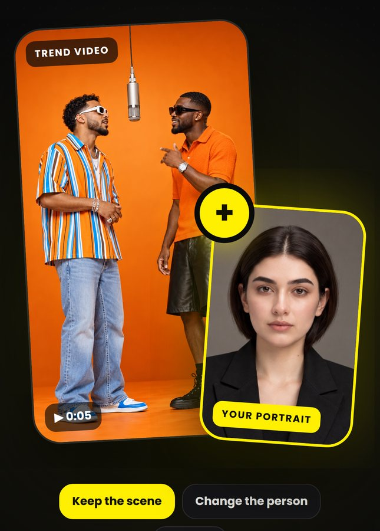
Star in any trend
Add a trend video and your portrait. Yopi keeps the scene and puts you in it.
Star in viral trends, try on new looks and turn any photo into a video, all from one selfie.
Everything you need to make photos and videos people stop scrolling for.

Add a trend video and your portrait. Yopi keeps the scene and puts you in it.
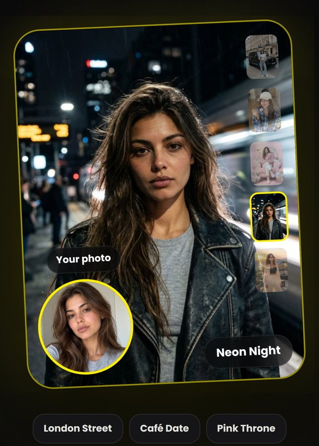
London streets, neon nights, a Riviera sunset. Same you, a new style.
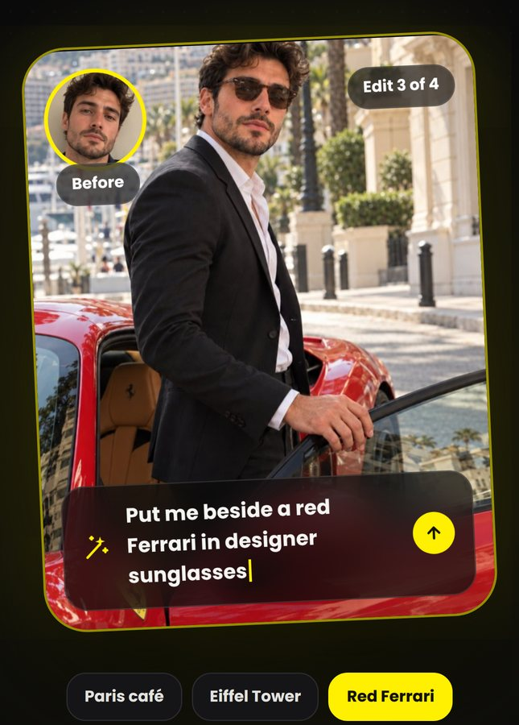
Type what you want, like “put me in a sports car at sunset”, and watch it happen.
Turn any still photo into a short video in seconds.
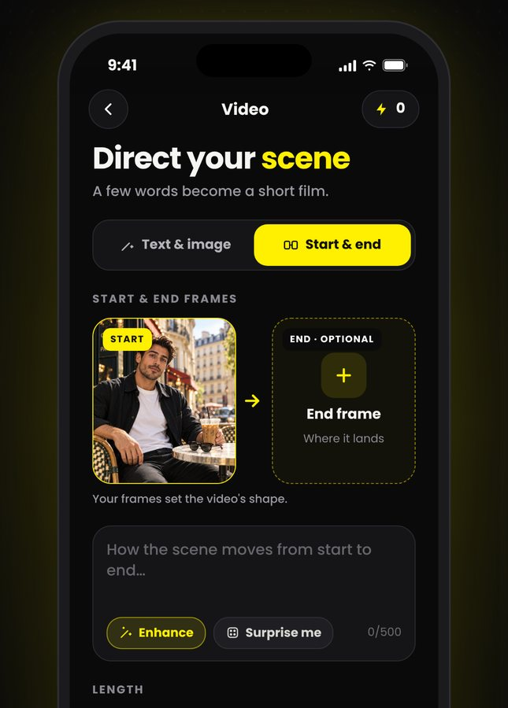
Write a scene or set start and end frames, and get a video with sound.
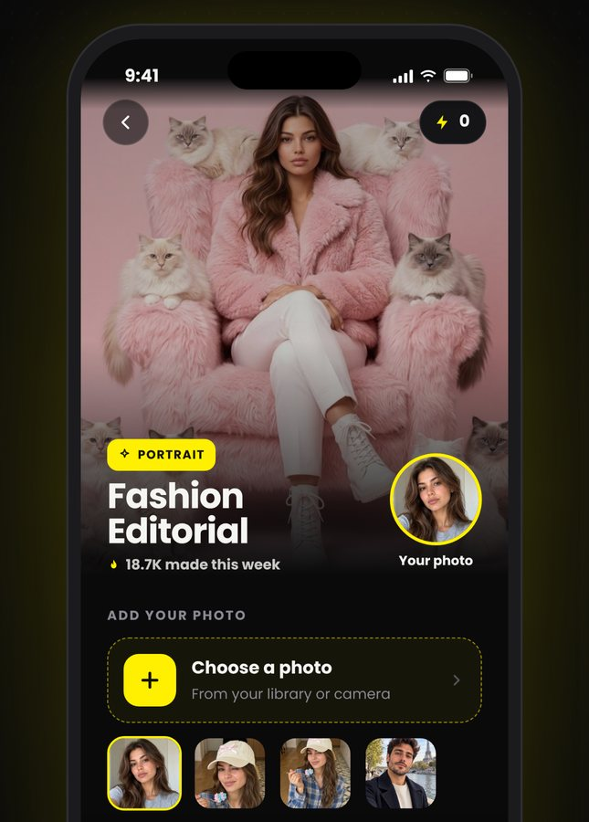
Pick a look someone made, add your photo and tap Generate.
Browse trending templates or open Create to start from scratch.
One clear, well-lit selfie is all it takes.
Your result lands in your Library, ready to save and share.
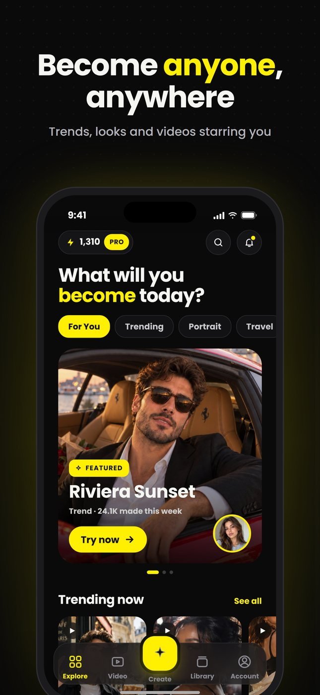
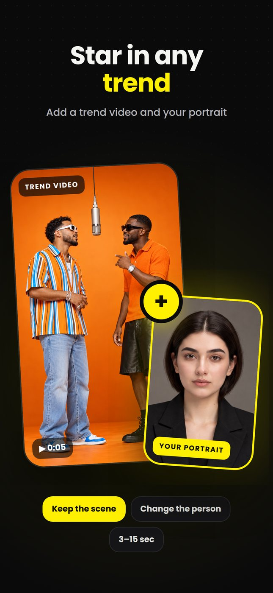
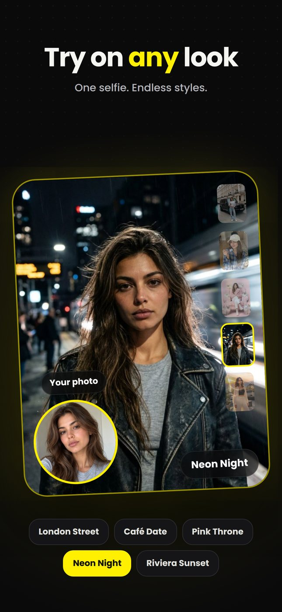
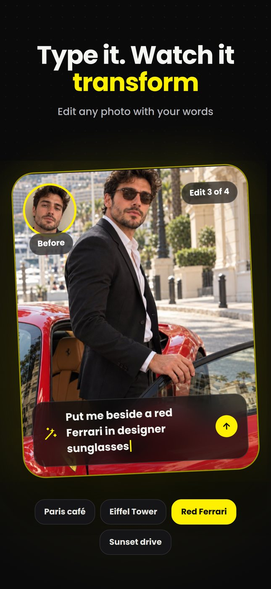
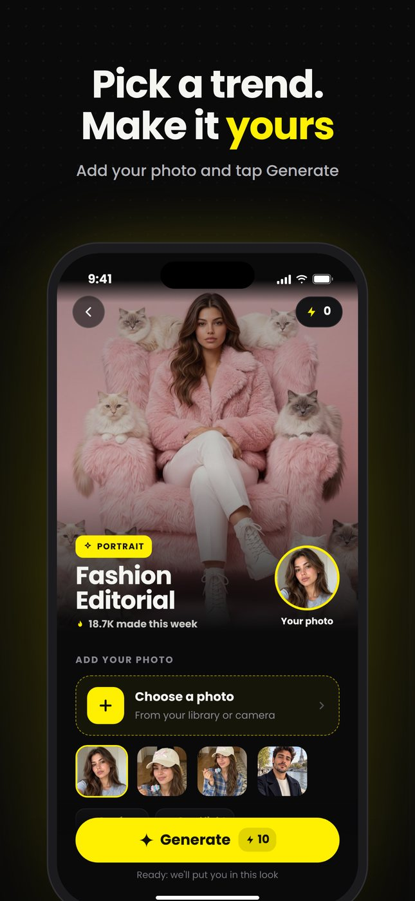
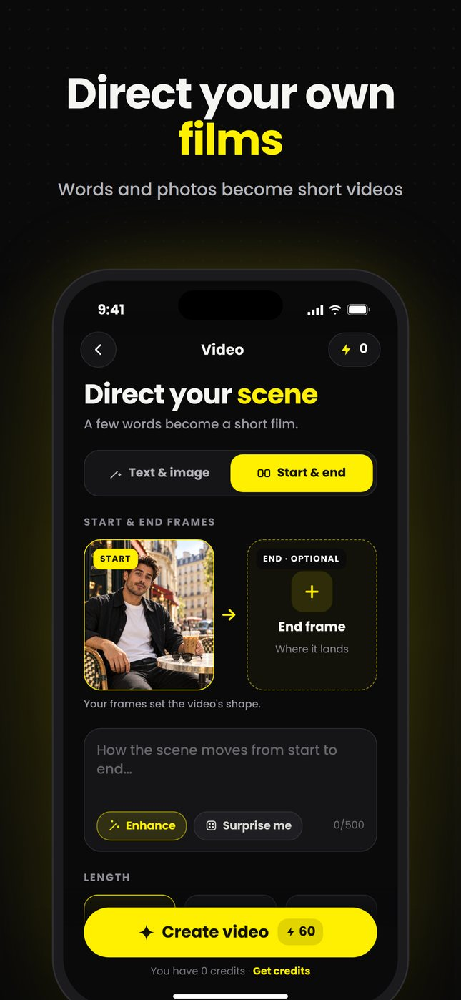
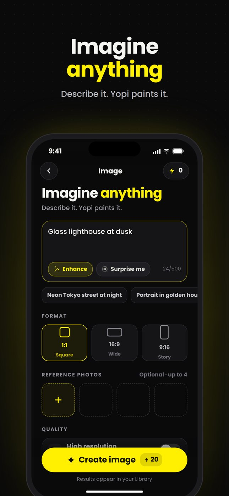
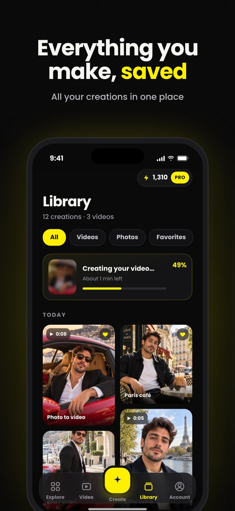
An iPhone and one clear photo of your face. Good light and a single face in the frame give the best results.
Your photos are only used to create the results you ask for. Read our Privacy Policy for how we store and delete them.
Each creation uses credits. Pro gives you full access and a monthly credit allowance, and you can buy extra credits at any time in the app.
Subscriptions are managed by Apple. Open Settings on your iPhone, tap your name, then Subscriptions, choose Yopi and tap Cancel Subscription.
Only with their permission. Do not upload photos of anyone without their consent, or of anyone under 18.
In the app, go to Settings, then Account, then Delete account. You can also contact us and we will delete it for you.